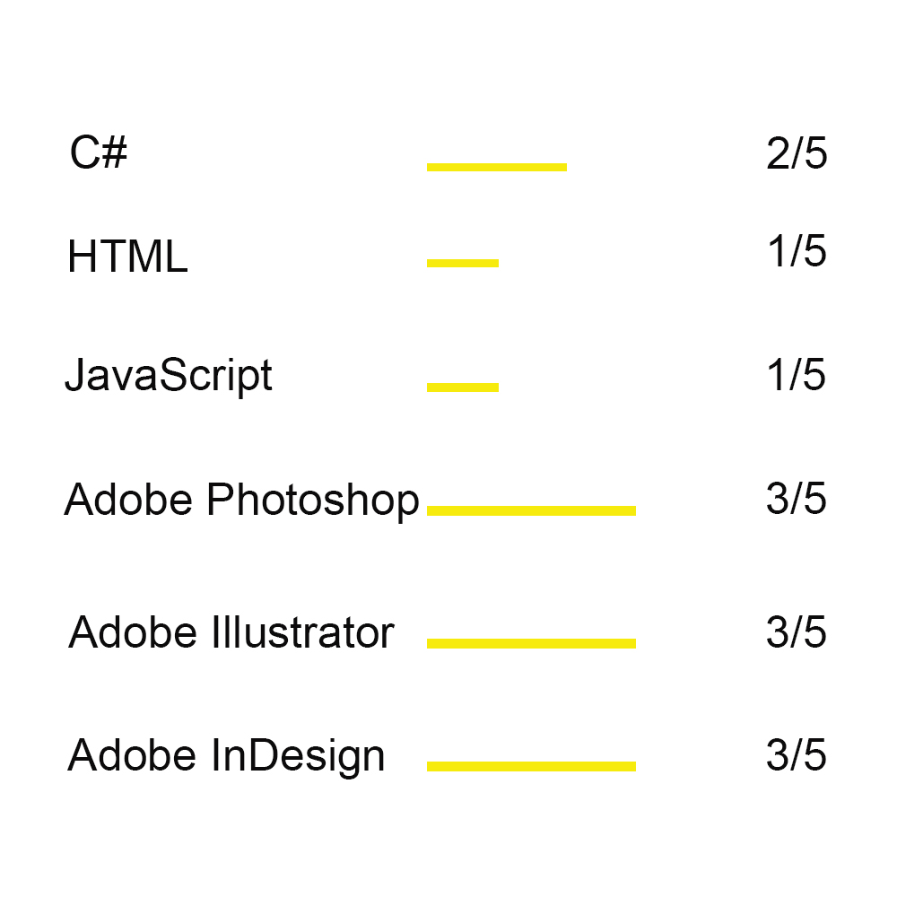

About
I´m a 26 years old Portuguese artist.
I grew up surrounded by fantasy characters and art, for example the Magic the Gathering
card illustrations. That was a motivation that drew my path as an artist, I knew that
what I wanted was to work in that environment. Draw my own pictures, concept my own
characters, even creating my own stories.
So as you can see, I'm a fantasy fan. But that is not all I can do.
I studied at ESAD - Escola Superior de Artes e Design, Caldas da Rainha, Portugal, frowm
where i got graduation in Fine Arts
After many years of practice and absorbing inspiration, I now work as an artist freelancer.
Fantasy or not, If you´re looking for an illustration, painting, or a character design feel
to contact me, I´m your guy.

Art